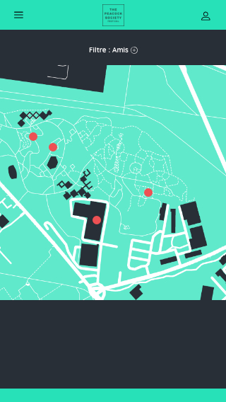
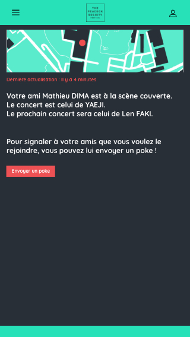
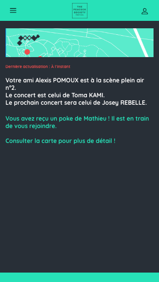
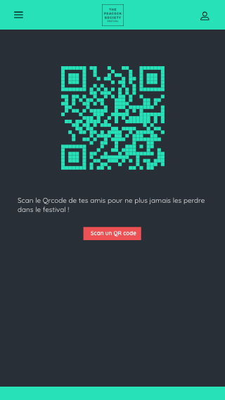
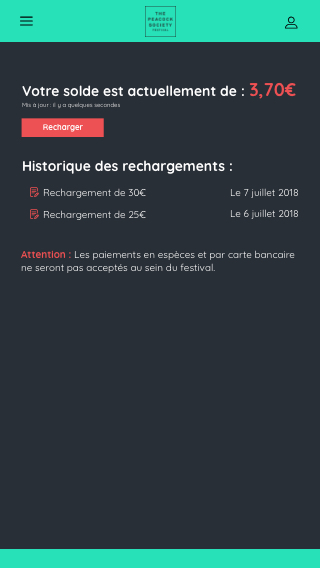
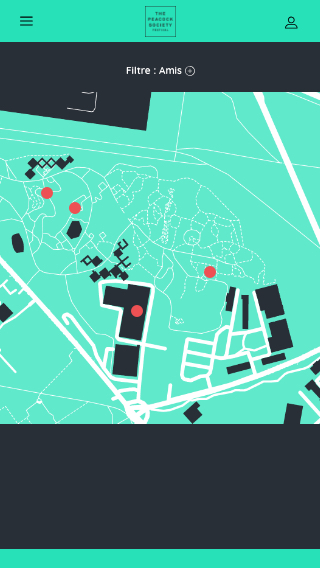
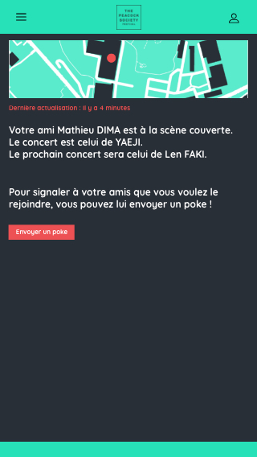
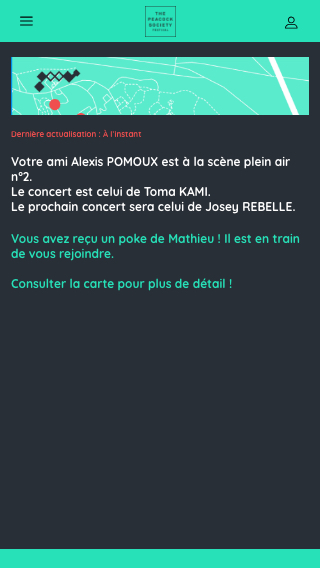
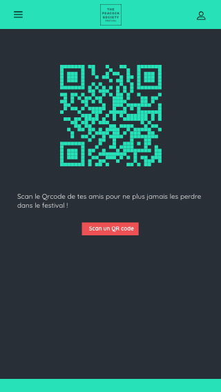
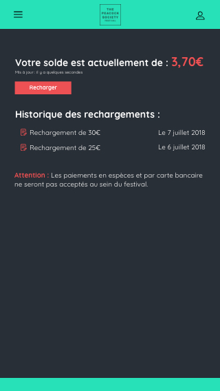

Projet d'étude The Peacock Society
Maquette UX /UI
Le brief client
Nous sommes une association qui dynamise la vie culturelle parisienne grâce au festival électro "The Peacock Society" qui se déroule chaque année durant l'été. Nous avons créer un espace liant espaces couverts et lieux extérieurs, afin de créer une ambiance musicale unique au monde où les visiteurs pourront découvrir la scène de la musique électronique dans un lieu insolite de Paris, les Grandes Halles du Parc Floral : https://thepeacocksociety.fr/. Notre site est responsive mais accuse une certaine pauvreté graphique que nous désirons changer. De plus, nombre de nos visiteurs ne s'y retrouvent pas, trouvant confus l'arborescence générale et l'agencement du site, pourtant simple en terme de quantité de contenu. Nous vous laissons toute lattitude afin de transformer notre charte graphique afin d'y incorporer les éléments qui vous sembleront intéressants afin d'y personnaliser le site de l'édition 2019. Nous souhaiterions ainsi la création d'une one-page, reprenant l'ensemble des informations du site, même si nous acceptons des renvois vers des sous-pages. Cette page reprendra les informations actuelles mais au sein d'une organisation plus claire en terme d'UX, toujours responsive, mais en apportant la touche "électro" que nous désirons.
La maquette desktop :

L'application
- Nous désirons une app compagnon au festival permettant :
- de se retrouver au sein du festival (map interactive)
- de recevoir des notifications live d'events (début de concerts, promotions sur les stands, etc...)
- de se substituer éventuellement à notre bracelet cashless et notre solution actuelle Lyf Pay
 








